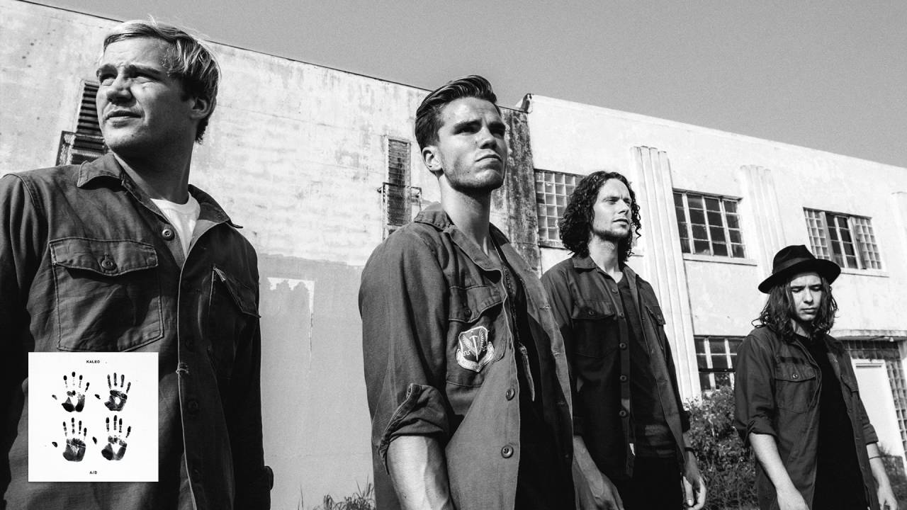

AS THE DRIVING CREATIVE FORCE BEHIND KALEO, ONE OF ICELAND’S MOST SUCCESSFUL MUSICAL EXPORTS, JJ JULIUS SON GENERALLY LOOKS FORWARD-- TO THE NEXT RECORDING SESSION, THE NEXT GIG, THE NEXT SOURCE OF INSPIRATION. SO, WHEN ASKED TO LOOK BACK, HE IS TRULY MOVED BY HOW SUCCESSFUL AND EPIC THE JOURNEY HAS ALREADY BEEN, JUST ONE ALBUM DEEP INTO HIS CAREER ON THE INTERNATIONAL STAGE.
IN JUST THREE SHORT YEARS, KALEO HAS SCORED A TRIFECTA OF GLOBAL HITS, INCLUDING THE CHURNING NO. 1 ALTERNATIVE TRACK “WAY DOWN WE GO” ; RECEIVED A GRAMMY NOMINATION FOR THE HARD-HITTING STRUTTER “NO GOOD” ; AND WATCHED ITS FIRST ALBUM FOR ATLANTIC RECORDS, 2016’S A/B, GO GOLD. THE BAND HAS TOURED THE WORLD, FROM SWEATY NIGHTCLUBS FILLED WITH DIEHARD FANS TO MAMMOTH CROWDS AT COACHELLA, BONNAROO AND LOLLAPALOOZA. KALEO HAS EVEN PLAYED VAST STADIUMS, SEDUCING THOUSANDS OF ROLLING STONES FANS WITH ITS MAJESTIC ROCK SOUND, JULIUS SON’STOWERING, BLUES-INFLECTED VOCALS AND SINGULAR GUITAR LICKS. “EVERYBODY ELSE SAYS LOOK HOW FAR YOU'VE COME,” SAYS THE SINGER-SONGWRITER-MULTI-INSTRUMENTALIST-PRODUCER OF THESE MILESTONES. “BUT YOU'VE GOT TO WALK EVERY SMALL STEP OF THE WAY, SO IT DOESN'T FEEL LIKE YOU'VE COME THAT FAR BECAUSE THERE'S SO MANY STEPS.”
EVERY BIT OF THAT LIVED EXPERIENCE IS PACKED INTO HIS NEXT BIG STEP: KALEO’S LATEST ALBUM SURFACE SOUNDS (ELEKTRA/ATLANTIC).
IT IS A SLY TITLE GIVEN THE LAYERS OF MEANING THAT IT HOLDS FOR JULIUS SON.
FROM THE FOUND SOUNDS OF THE “SURFACE” AROUND HIM THAT HE INTERPOLATED INTO THE SONGS—FROM BIRDS SINGING TO THE AMBIENT NOISE OF ICELANDIC WATERFALLS—TO THE INITIAL FEELINGS THAT SPARKED EACH TRACK, THE 29-YEAR-OLD SOUGHT INSPIRATION IN BOTH THE TANGIBLE WORLD AROUND HIM AND THE EMOTIONAL ONE WITHIN. BUT THERE IS MORE TO IT THAN THAT. “IT'S A TAKE ON HOW MUCH WE TEND TO FOCUS ON THE SURFACE,” HE SAYS IN A TIME WHERE CURATION OF IMAGE CAN FEEL MORE IMPORTANT THAN THE DEPTH OF TRUE HUMAN CONNECTION. “THERE'S SO MUCH MORE BENEATH THAT.”
KALEO EAGERLY DIVES INTO THAT DEEPER LAYER FOR THE MUSIC ON SURFACE SOUNDS WHICH OFFERS A SPECTRUM OF SOUNDS THAT TAKE FULL ADVANTAGE OF JULIUS SON’S POWERFUL PIPES. (KALEO MEANS “THE VOICE” IN HAWAIIAN AND NEVER HAS A BAND BEEN MORE APTLY NAMED.)
FROM THE WALLOPING GUITAR JAM “ALTER EGO” TO THE WEARY-YET-HOPEFUL ACOUSTIC GENTLENESS OF “MY FAIR LADY” TO THE WHIMSICAL “HEY GRINGO”—WHICH FINDS JULIUS SON EXPLORING A PLAYFUL VIBE AND THE SEXY CONTOURS OF HIS FALSETTO—SURFACE SOUNDS NEVER REPEATS ITSELF WHILE STILL MANAGING TO RETAIN A COHESIVE VIBE.
THE ALBUM’S VARIETY OF SOUNDS AND IMAGERY, FROM LIGHTHEARTED TO SOLEMN, COMES NATURALLY, SAYS JULIUS SON. “I THINK THAT'S JUST ME GROWING UP AS A MUSICIAN AND AS A LISTENER. THE SONGS CRY OUT FOR A CERTAIN SOUND AND THEN I HAVE TO GO AND SERVE THE SONG.”
WHAT HE ISN’T INTERESTED IN IS SERVING UP THE MEANINGS BEHIND THE TRACKS, PREFERRING TO LEAVE INTERPRETATION UP TO THE LISTENER.
“MY FAVORITE THING IS THAT WE, AS INDIVIDUALS, DO INTERPRET MUSIC SO DIFFERENTLY,” HE ADDS. “THAT’S WHAT IS SO MAGICAL: WATCHING HOW PEOPLE LISTEN AND SEEING THESE SONGS TAKE ON NEW MEANINGS BASED ON MOOD OR THE WORLD AROUND US.” IN CLOSING, HE SHARES OF THE OVERARCHING CONCEPT OF SURFACE SOUNDS, “I SIMPLY HOPE IT MAKES YOU FEEL. IF SO, THAT’S AMAZING AND GOES BEYOND THE SURFACE.”